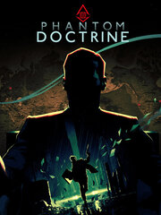

Phantom Doctrine
Phantom Doctrine
Details
|  | |
| Playtime | Not Played |
| Last Activity | Never |
| Added | 8/19/2023 14:50:25 |
| Modified | 8/19/2023 19:33:35 |
| Completion Status | Not Played |
| Library | Steam |
| Source | Steam |
| Platform | PC (Windows) |
| Release Date | 8/14/2018 |
| Community Score | 59 |
| Critic Score | 75 |
| User Score | |
| Genre | Adventure Role-playing (RPG) Simulator Strategy Tactical Turn-based strategy (TBS) |
| Developer | CreativeForge Games |
| Publisher | Forever Entertainment S. A. Good Shepherd Entertainment |
| Feature | Multiplayer Single Player |
| Links | Facebook Steam YouTube Official GOG Twitch |
| Tag | |
Description
Phantom Doctrine is a strategic turn-based espionage thriller set at the peak of the Cold War. Drawing on a wide variety of influences and capturing the subtle intrigue of classic spy films, the game thrust the player into a mysterious world of covert operations, counterintelligence, conspiracy and paranoia.
As leader of a secret organization known only as The Cabal, you are charged with preventing a global conspiracy that seeks to pit leader against leader, and nation against nation. By carrying out secret missions, investigating classified files, and interrogating enemy agents, a sinister plot is uncovered. With the clock ticking, it must be thwarted in order to save the world from an unthinkable fate.


As leader of a secret organization known only as The Cabal, you are charged with preventing a global conspiracy that seeks to pit leader against leader, and nation against nation. By carrying out secret missions, investigating classified files, and interrogating enemy agents, a sinister plot is uncovered. With the clock ticking, it must be thwarted in order to save the world from an unthinkable fate.
Features
- A Deep Single Player Story Campaign: the 40+ hour Single player campaign mode features a rich gripping plot woven with numerous historical events and characters to bring the terrifying reality of the Cold War to life from a unique perspective.
- Next-generation turn-based combat: offers unprecedented flexibility of movement and actions, including variable Overwatch modes and assault-oriented Breach ability.
- Expanded battlefield: assets can be positioned around the world, enabling you to call for assistance in the heat of battle. But the enemy can also bring in reinforcements, including heavy weapons and even air support. Don’t bring a knife to a gunfight.
- Knowledge is power: Improve your chances of success by infiltrating mission locations with undercover operatives. Attempt to stay one step ahead of enemy agents, who are also preparing to spring their own devious traps.
- Lurk in the shadows with fully-fledged stealth gameplay: Clandestine operations can be completed with muffled weapons, silent takedowns and cutting edge Cold War technology.
- Take charge of the crucial counterintelligence operation: Recruit from both the KGB and the CIA, the criminal fraternity, or even utilise the unique talents of subjects of secret government experiments. Weapons, resources and contacts can be secured around the globe, enabling you to command from afar. But if the situation requires a hands-on approach, you will be locked, loaded and ready to fight.
- Innovative Investigation Board: Utilizing a classic pinboard and string approach, the Investigation Board is the hub from where cases, locations and individuals can be researched to reveal new missions, resources and technologies. In Phantom Doctrine, investigation and intel is an active and vital element of success.
- Multiplayer Battles: lose friends and make new enemies in ruthless online multiplayer matches. Experience the deviousness and lethality of Phantom Doctrine in accessible 1v1 skirmishes.
- Utilize ruthless Technology: New capabilities can either be stolen from the enemy or researched, and then ruthlessly used to your advantage. Often experimental and morally dubious, brainwashing, interrogation, body engineering and chemical enhancement are all fair game as you extract information by any means necessary.
- Fully customizable character creation: Operatives can be customized each time they need a new identity. Change their appearance, forge their documents, train them in the deadly arts and send them back into the field.
- Carefully Designed hand-crafted levels: Combining the best of both worlds: the quality of large, hand-designed maps and meticulous, smart design ensuring visual and gameplay variety. Travel the world of the 1980s in the grip of the Cold War on both sides of the Iron Curtain.
- Replayable modular campaign: a wide array of mechanics ensures markedly different playthroughs. A unique experience is guaranteed by randomly generated character names and backgrounds, algorithmically populated and adapted maps, and randomized intelligence snippets.
- A spy thriller from two different points of view: Play as either a former KGB counterintelligence operative or a renegade CIA wet work commando. Each has to come to terms with the truth and challenge the global conspiracy. Complete the campaign to be rewarded with an additional protagonist in Extended Playthrough.
- No mission is too big or too small: whether infiltrating a busy government facility to clinically assassinate a target, or mounting a full frontal assault on an enemy base. With optional objectives linked to a mission’s complexity, as well as loot and intelligence to collect, every decision has an impact.